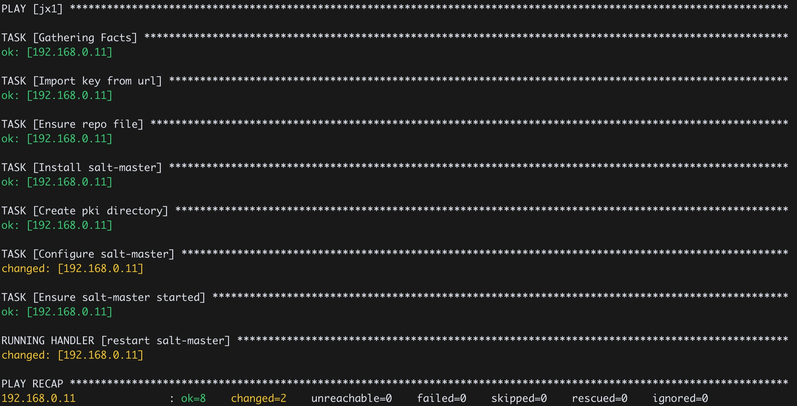

Ansible 学习笔记（二）
Ansible playbook 使用 YAML 格式，模版文件使用 jinja2，要完成功能强大的 playbook，需要对这两个格式比较熟悉。
我们写一个部署 salt-master 的 playbook，一共包含3个文件。
- saltstack.repo：官方下载的 saltstack yum repo 文件
- master.j2： salt-master 配置文件，内容需要依赖变量设置，所以是 jinja2 格式
- playbook-salt-master.yml：Ansible playbook 文件
├── master.j2
├── playbook-salt-master.yml
└── saltstack.repo
playbook-salt-master.yml 就是 yaml 格式的 playbook 文件，每个 task 做的事情都不复杂。每一个 name 之后的属性都是 Ansible 提供的模块，用到了 ansible.builtin.rpm_key/copy/yum/file/template/systemd。正是这些功能强大的模块支持，让我们可以完成各种复杂的操作。
---
- hosts: example
become: yes
handlers:
- name: restart salt-master
systemd:
name: salt-master
state: restarted
tasks:
- name: Import key from url
ansible.builtin.rpm_key:
state: present
key: https://repo.saltproject.io/py3/redhat/7/x86_64/latest/SALTSTACK-GPG-KEY.pub
- name: Ensure repo file
copy:
src: saltstack.repo
dest: /etc/yum.repos.d/saltstack.repo
- name: Install salt-master
yum:
name: salt-master
state: present
- name: Create pki directory
file:
path: /etc/salt/pki/master/minions
state: directory
- name: Configure salt-master
template:
src: master.j2
dest: /etc/salt/master
notify:
- restart salt-master
- name: Ensure salt-master started
systemd:
name: salt-master
enabled: yes
daemon_reload: yes
state: started
saltstack.repo
[salt-latest-repo]
name=Salt repo for RHEL/CentOS 7 PY3
baseurl=https://repo.saltproject.io/py3/redhat/7/x86_64/latest
skip_if_unavailable=True
failovermethod=priority
enabled=1
enabled_metadata=1
gpgcheck=1
gpgkey=https://repo.saltproject.io/py3/redhat/7/x86_64/latest/SALTSTACK-GPG-KEY.pub, https://repo.saltproject.io/py3/redhat/7/x86_64/latest/base/RPM-GPG-KEY-CentOS-7
master.j2
master_id: {{inventory_hostname}}
salt-master 的配置项非常多，作为测试我们可以都用默认配置，只自定义配置 master_id 这一项。Ansible 里的变量非常灵活，后面再专门讲。
Handlers
前面的 playbook 定义了一个名叫 restart salt-master 的 handler，handler 本质上跟 task 类似，只不过 handler 需要被通知才执行。playbook 的 Configure salt-master 这个 task，定义了 notify 属性，当 master.j2 这个配置文件有变更时，通知 restart salt-master 这个 handler 执行。
handler 执行遵循一定的准则，
-
playbook 执行完后才会运行 handlers
-
只有被 notify 的 handler 才会执行
-
handler 只会执行一次（除非特殊配置）
-
如果 playbook 运行失败，未被 notify 的 handler 不会执行，除非指定 –force-handlers
handlers 常用于配置变更后重启服务，在例子中，如果配置没有变化，不会触发 notify，也就不会重启服务。
结合上一篇的 inventory，可以执行 playbook 看看效果。
$ ansible-playbook playbook-salt-master.yml
可以看到 handler 在最后执行 